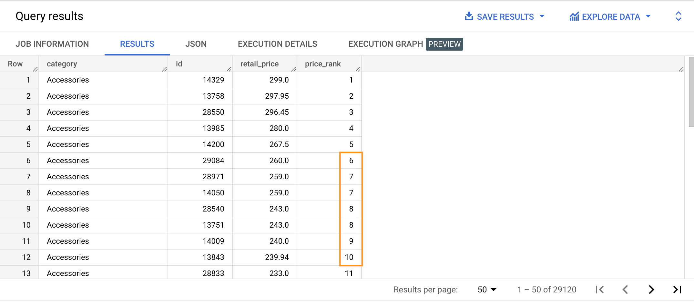
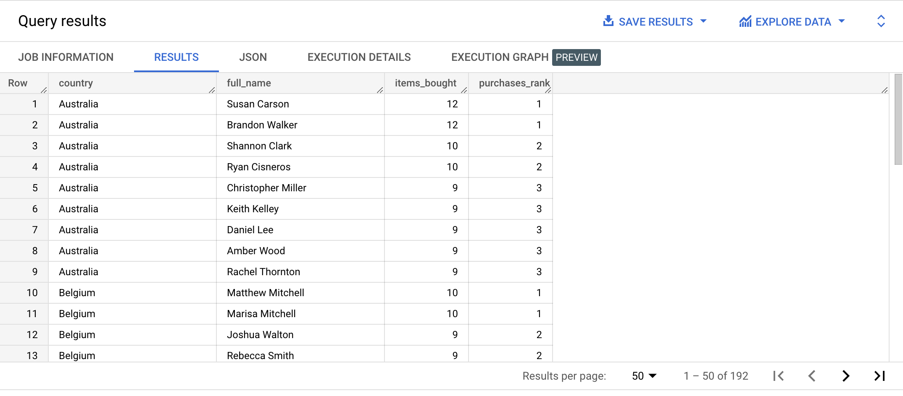
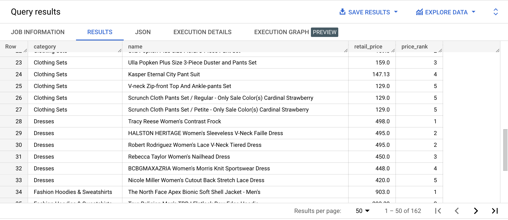
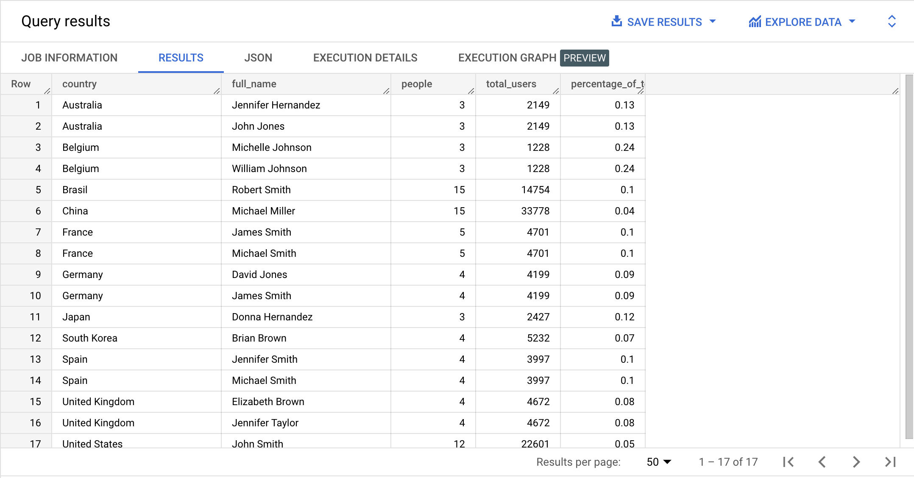

DENSE_RANK is similar to RANK (ranking function). Its output is based on the value of the ranking column used in the ORDER BY inside the OVER clause.
Here the rank is always consecutive: rows with the same ranking column’s value are assigned the same rank, but the next rank value is one greater than the previously assigned rank.
SELECT category,
id,
TRUNC(retail_price, 2) AS retail_price,
DENSE_RANK() OVER (PARTITION BY category ORDER BY retail_price DESC) AS price_rank
FROM bigquery-public-data.thelook_ecommerce.products
ORDER BY category ASC;

👉 Check out the official documentation
{% include practice_problems_intructions.html %}bigquery-public-data.thelook_ecommerce.users
bigquery-public-data.thelook_ecommerce.order_items

WITH country_customers_items_bought AS
( SELECT country,
users.id AS user_id,
CONCAT(first_name, ' ', last_name) AS full_name,
COUNT(*) AS items_bought
FROM bigquery-public-data.thelook_ecommerce.users AS users
INNER JOIN bigquery-public-data.thelook_ecommerce.order_items AS order_items
ON users.id = order_items.user_id
GROUP BY country, user_id, full_name
),
buys_ranked_country_users AS
( SELECT country,
full_name,
items_bought,
DENSE_RANK() OVER(PARTITION BY country ORDER BY items_bought DESC) AS purchases_rank
FROM country_customers_items_bought
)
SELECT *
FROM buys_ranked_country_users
WHERE purchases_rank <= 3
ORDER BY country ASC, purchases_rank ASC;
bigquery-public-data.thelook_ecommerce.products

WITH category_product_prices AS
( SELECT category,
name,
ROUND(retail_price, 2) AS retail_price,
DENSE_RANK() OVER(PARTITION BY category ORDER BY retail_price DESC) AS price_rank
FROM bigquery-public-data.thelook_ecommerce.products
)
SELECT *
FROM category_product_prices
WHERE price_rank <= 5
ORDER BY category ASC, price_rank ASC;
bigquery-public-data.thelook_ecommerce.users

WITH country_population AS
( SELECT country,
COUNT(*) AS total_users
FROM bigquery-public-data.thelook_ecommerce.users
GROUP BY country
),
country_common_full_names AS
( SELECT country,
CONCAT(first_name, ' ', last_name) AS full_name,
COUNT(*) AS people
FROM bigquery-public-data.thelook_ecommerce.users
GROUP BY country, full_name
HAVING people > 1
),
ranked_country_common_full_names AS
( SELECT country,
full_name,
people,
DENSE_RANK() OVER(PARTITION BY country ORDER BY people DESC) AS name_rank
FROM country_common_full_names
),
country_top_names AS
( SELECT country,
full_name,
people,
name_rank
FROM ranked_country_common_full_names
WHERE name_rank = 1
)
SELECT c1.country,
full_name,
people,
total_users,
ROUND((people / total_users) * 100, 2) AS percentage_of_total
FROM country_top_names c1
INNER JOIN country_population c2
ON c1.country = c2.country
ORDER BY country ASC,
percentage_of_total DESC,
full_name ASC;